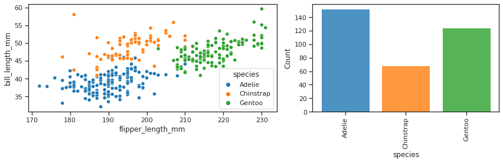
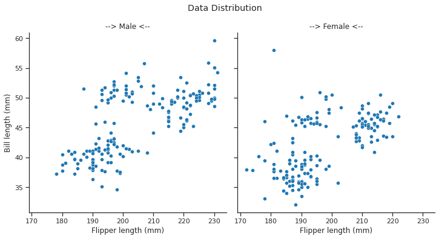

Visualización de datos en Seaborn —
0:00 min | Última modificación: Octubre 13, 2021 | [YouTube]
[1]:
import matplotlib.pyplot as plt
import numpy as np
import seaborn as sns
Carga del dataset de prueba
[2]:
#
# Los datasets están disponibles en:
# https://github.com/mwaskom/seaborn-data
#
# Ejemplos:
# * 'mpg
# * 'titanic'
# * 'tips'
# * 'flights'
# ...
#
tips = sns.load_dataset('tips')
tips.head()
[2]:
| total_bill | tip | sex | smoker | day | time | size | |
|---|---|---|---|---|---|---|---|
| 0 | 16.99 | 1.01 | Female | No | Sun | Dinner | 2 |
| 1 | 10.34 | 1.66 | Male | No | Sun | Dinner | 3 |
| 2 | 21.01 | 3.50 | Male | No | Sun | Dinner | 3 |
| 3 | 23.68 | 3.31 | Male | No | Sun | Dinner | 2 |
| 4 | 24.59 | 3.61 | Female | No | Sun | Dinner | 4 |
Clasificación por el tipo de análisis
relplot (relacional) <— Figure level
scatterplot
lineplot
displot (distribuciones) <— Figure level
histplot
kdeplot
ecdfplot
rugplot
catplot (categoricas) <— Figure level
stripplot
swarmplot
boxplot
violinplot
pointplot
barplot
Preparación de una gráfica
[3]:
#
# Note que esta es una gráfica hecha en Matplotlib
#
def sinplot(flip=1):
x = np.linspace(0, 14, 100)
for i in range(1, 7):
plt.plot(x, np.sin(x + i * .5) * (7 - i) * flip)
Creación de la figura
[4]:
#
# Opciones para set_style:
#
# * "whitegrid"
# * "white"
# * "dark"
# * "white"
# * "ticks"
#
sns.set_style('ticks')
#
# Opciones de set_context
#
# * "paper"
# * "notebook"
# * "talk"
# * "poster"
#
sns.set_context("talk")
#
# Realiza el gráfico
#
sinplot()
#
# Se remueven los ejes
#
sns.despine()
plt.show()

[5]:
sns.set_style("ticks")
sinplot()
sns.despine(
offset=10,
trim=True,
left=True,
right=False,
)
plt.show()

Paletas de colores disponibles
[6]:
sns.color_palette()
[6]:
[7]:
sns.color_palette(
"pastel",
14, # número de colores de la paleta
)
[7]:
[8]:
sns.color_palette(
"husl",
12,
)
[8]:
[9]:
sns.color_palette("Set2")
[9]:
[10]:
sns.color_palette("flare")
[10]:
[11]:
#
# Tambien se puede indicar una paleta disponible
# en Matplotlib como un colormap:
#
# https://matplotlib.org/stable/tutorials/colors/colormaps.html
#
sns.color_palette("viridis")
[11]:
[12]:
sns.color_palette("Greys")
[12]:
Creación de varias graficas en una misma figura
[13]:
#
# Gráficas usando subplots de Matplotlib
# ===============================================
# Las figuras son rectangulares
#
penguins = sns.load_dataset("penguins")
sns.set_context("notebook")
f, axs = plt.subplots(
1,
2,
figsize=(12, 4),
gridspec_kw=dict(
width_ratios=[4, 3],
),
)
sns.scatterplot(
data=penguins,
x="flipper_length_mm",
y="bill_length_mm",
hue="species",
ax=axs[0],
)
sns.histplot(
data=penguins,
x="species",
hue="species",
shrink=0.8,
alpha=0.8,
legend=False,
ax=axs[1],
)
plt.xticks(rotation=90)
f.tight_layout()

Personalización a nivel de figura
[14]:
g = sns.relplot(
data=penguins,
x="flipper_length_mm",
y="bill_length_mm",
col="sex",
)
g.set_axis_labels(
"Flipper length (mm)",
"Bill length (mm)",
)
g.fig.suptitle(
"Data Distribution",
y=1.05,
)
g.set_titles("--> {col_name} <--")
plt.show()
